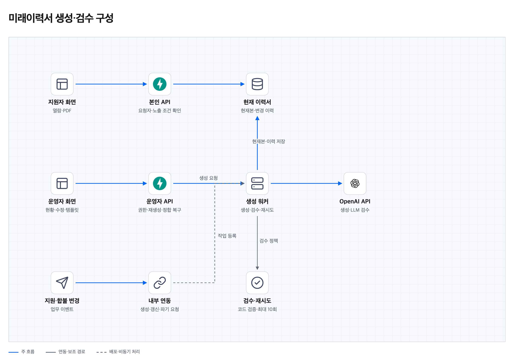

2026.09 ~ 2026.10
미래이력서 AI 생성·자동 검수 서비스
마케팅팀이 만들고 메일로 전달하던 지원자용 AI 이력서를 사이트 안에서 생성·검수·노출하도록 바꾼 프로젝트입니다.
AI 생성·자동 검수 운영 배포
코드 검사와 LLM 판정을 분리
- 역할
- 프로젝트 리더로 백엔드·어드민·홈의 작업을 나누고 API, 생성 파이프라인과 화면 개발, 운영 배포를 맡았습니다.
- 기술
- Python(FastAPI), PostgreSQL, Redis, S3, OpenAI API, Next.js



판단과 이유
사람이 매번 결과물을 읽지 않아도 품질을 확인할 기준이 필요했습니다. 규칙으로 확인할 항목은 코드로 검사하고 내용 판단만 LLM에 맡겼습니다.
구현·개선
- PRD를 API와 화면 단위 작업으로 나눠 공통 백엔드·과정 API·어드민·홈에 걸쳐 구현했습니다.
- 조건부 DB 갱신과 시도 토큰으로 중복 생성을 막았습니다. 상태 동기화 유실은 원본 데이터 재조회로 복구하고 조회·노출 판정을 공통 함수로 맞췄습니다.
- 기획 체크리스트를 코드 검사와 LLM 판정으로 나눠 97점 기준으로 채점했습니다. 미통과 시 재생성하되 최대 10회로 비용을 제한했습니다.
- 가상 지원자 8명으로 모델 2종과 프롬프트를 비교했습니다. 프롬프트는 객체 저장소 원본과 Redis 캐시로 관리해 배포 없이 과정별로 고칠 수 있게 했습니다.
- 마케팅팀이 직접 확인할 수 있는 QA 안내서를 작성했습니다. 생성 HTML은 스크립트 실행이 제한된 화면에서 보여주고 개인정보 조회·반출 통제도 적용했습니다.
결과와 성과
- 2026년 10월 19일 운영에 배포해 사이트 안에서 이력서를 생성하고 자동 검수한 뒤 노출하는 흐름을 만들었습니다.
- 가상 지원자 비교 실험에서 예시 문구를 그대로 베낀 결과가 12건에서 0건으로 줄었고, 오염 입력 8종을 탐지했습니다.